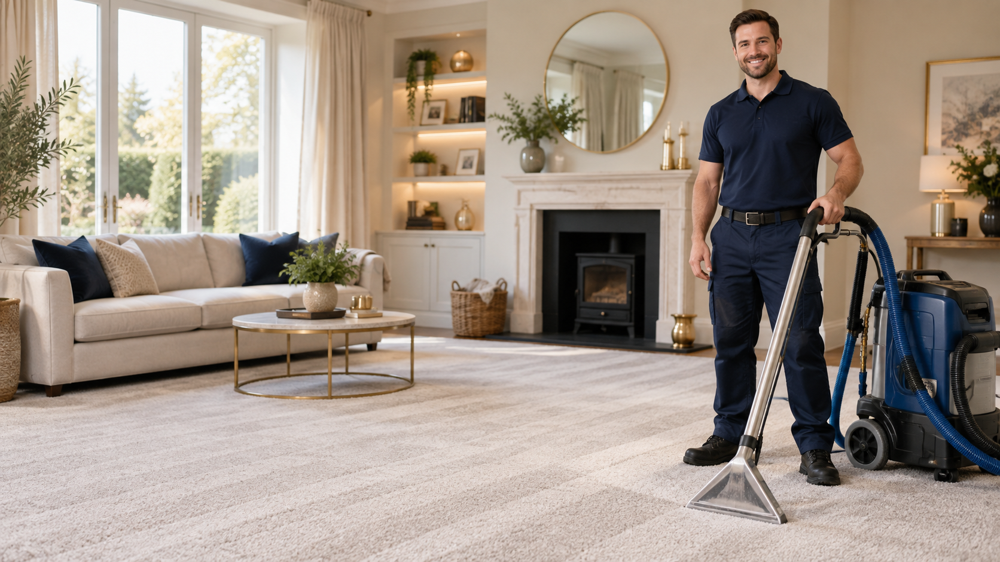
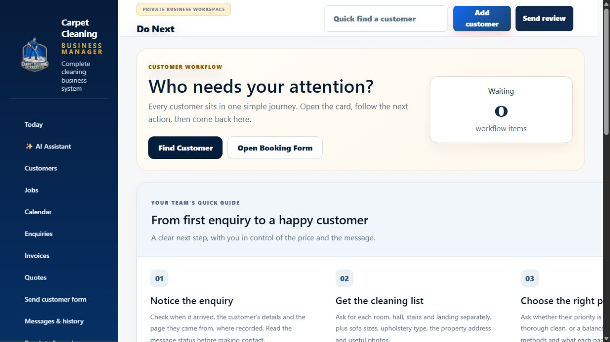

Business Manager
It captures the inquiry, sends automated messages, follows up on customers who go quiet and turns a cleaning list into a quote — with AI assistance throughout the process.
See the automated workflow
Built around the real work: inquiry, automatic messages, pricing, quotes, booking, reviews and repeat work.
Turn local visitors into enquiries with a professional quote form.
Send the first text and email five minutes after the enquiry.
Use the customer reply and your price book to prepare the quote.
Book the job, remind, review and rebook automatically.
The customer fills in the quote form.
A text and email go out after five minutes.
The customer’s cleaning list becomes a draft quote.
Confirm, review, follow up and bring them back.

The system highlights a new inquiry, a reply, a follow-up, a ready quote or a booking action.
Use your own room rates, upholstery prices, cleaning methods, extras and offers. The system prepares the quote for you to check and send.

Designed for carpet cleaners who want a professional website and a proper system behind it.
Request a demo